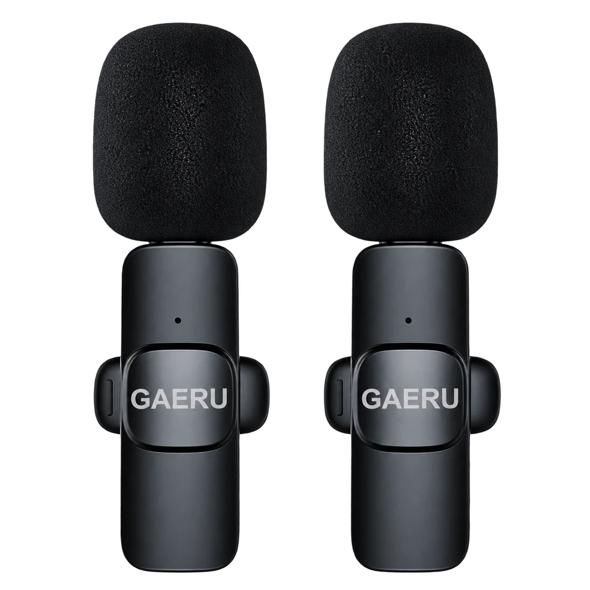

Không dây, không vướng
Di chuyển tự nhiên khi quay video hoặc trình bày trước máy quay. Khoảng cách kết nối lên đến 20 m trong điều kiện không có vật cản; khoảng cách thực tế tùy môi trường sử dụng.
GAERU K9 · MIC KHÔNG DÂY CÀI ÁO
Từ video đầu tiên đến buổi livestream tiếp theo. Một chiếc mic nhỏ gọn, tự động kết nối cho những câu chuyện đáng được nghe.

NHỎ GỌN ĐỂ BẮT ĐẦU
Di chuyển tự nhiên khi quay video hoặc trình bày trước máy quay. Khoảng cách kết nối lên đến 20 m trong điều kiện không có vật cản; khoảng cách thực tế tùy môi trường sử dụng.
Giúp bạn tập trung vào giọng nói. Hiệu quả phụ thuộc môi trường, vị trí mic và mức độ ồn thực tế.
Chọn đúng cổng và kiểm tra ứng dụng nhận mic trước khi ghi hình. Không cần kết nối Bluetooth.
Đặt mic cách miệng khoảng 10–20 cm; điều chỉnh vị trí phù hợp với cường độ giọng nói.


GAERU TRONG CUỘC SỐNG CỦA BẠN


| Nhu cầu | Mic điện thoại | GAERU K9 | Mic chuyên nghiệp |
|---|---|---|---|
| Chuẩn bị | Có sẵn trên máy | Mic và đầu thu | Tùy bộ thiết bị |
| Vị trí thu | Theo điện thoại | Cài áo gần người nói | Theo hệ thống |
| Phù hợp | Ghi nhanh, quay gần | Video, livestream, phỏng vấn | Sản xuất có yêu cầu cao |
GIẢI ĐÁP NHANH
Chọn theo cổng thực tế trên thiết bị. Kiểm tra hỗ trợ USB audio/OTG và khả năng nhận micro ngoài của đúng điện thoại, ứng dụng trước khi chọn.
Không cần kết nối Bluetooth hay cài app điều khiển riêng cho micro. Tuy nhiên trên điện thoại Android: máy OPPO, vivo, Realme/Redmi cần bật Kết nối OTG (vào Cài đặt → gõ "OTG"); máy không có OTG hoặc Samsung cần bật "Gỡ lỗi USB" trước khi sử dụng; và trên OPPO, Realme/Redmi, Samsung dòng A/M & một số máy Trung Quốc, app "Máy ảnh" (cam thường) chỉ dùng mic máy nên hãy quay qua TikTok, CapCut, Ulike, WutaCam (VutaCam), B612 hoặc Open Camera (Micro ngoài).
Kiểm tra thông số của đúng phiên bản trên hộp và hướng dẫn đi kèm. Trước buổi quay, sạc đầy và ghi thử tại khoảng cách dự định sử dụng; vật cản, nhiễu và tình trạng pin có thể ảnh hưởng kết nối.
Dùng nguồn và cáp theo hướng dẫn đi kèm, giữ mic khô ráo, tránh va đập và ghi thử sau khi sạc. Kiểm tra tương thích trước khi dùng bộ chuyển đổi.
Nguồn hình ảnh và video minh họa: trang GAERU K9. Giá và phiên bản được lấy tại cửa hàng hiện tại.
CÂU CHUYỆN TIẾP THEO BẮT ĐẦU TỪ BẠN